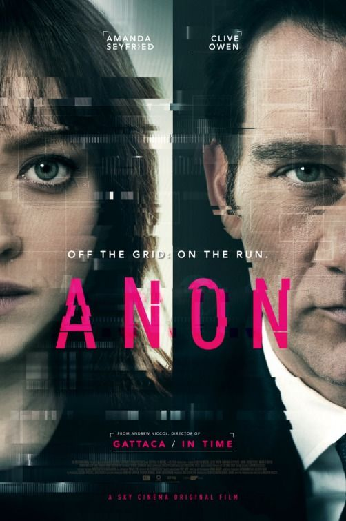
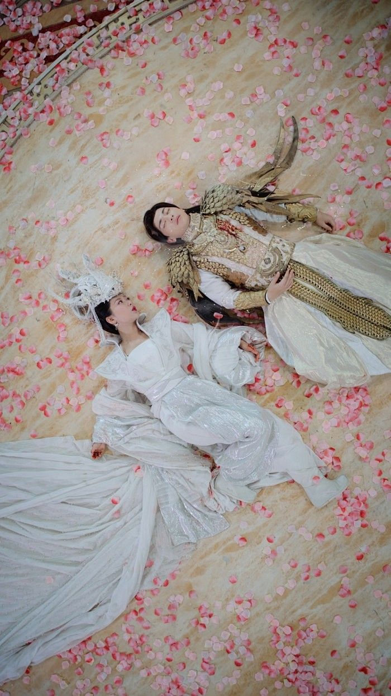
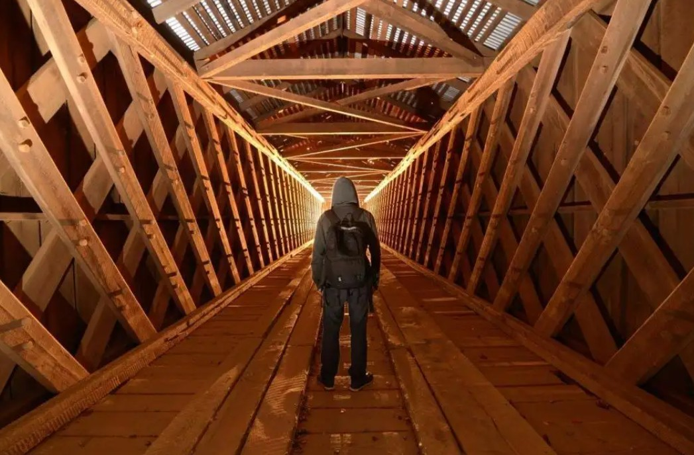
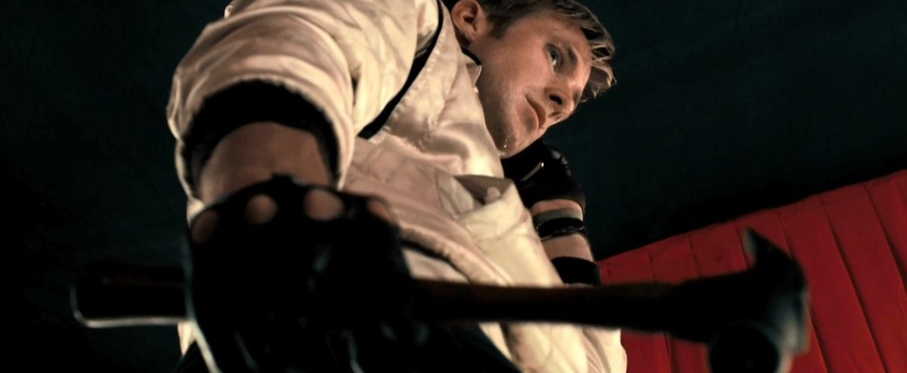
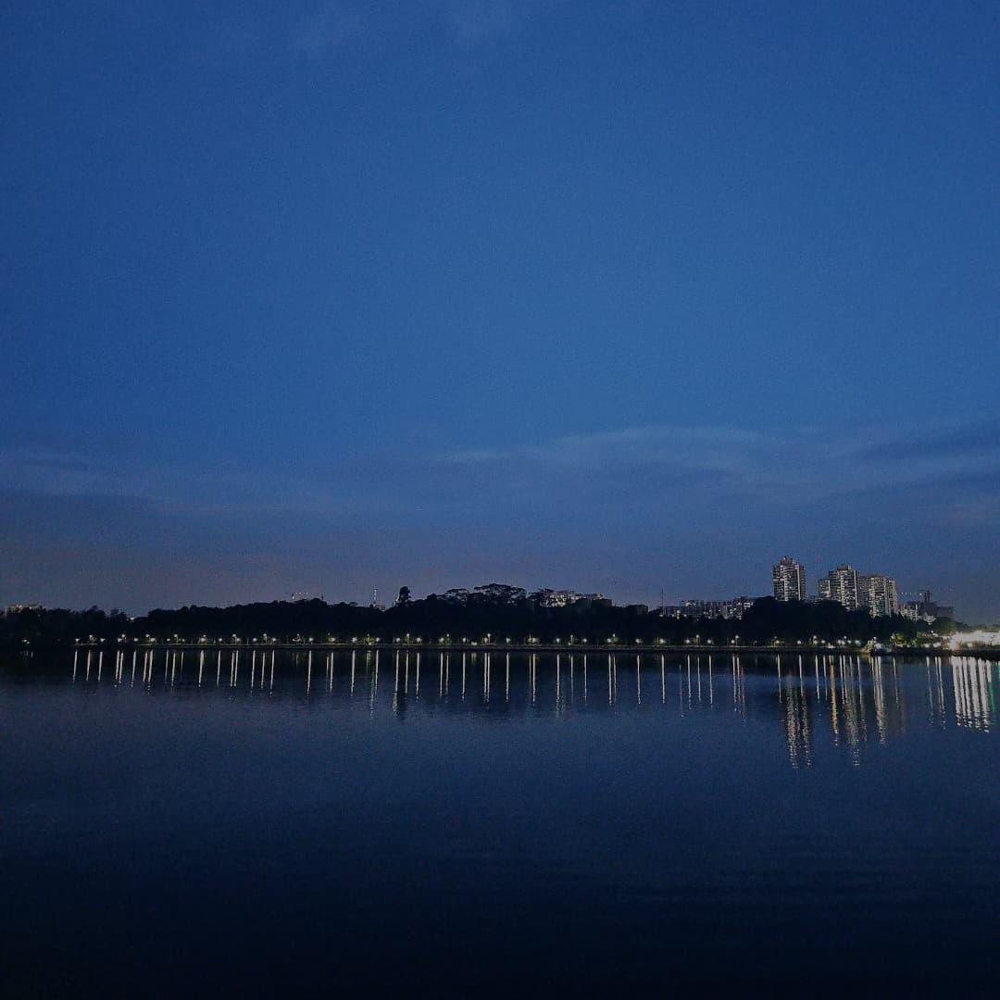
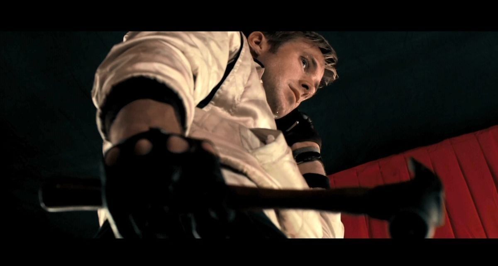

Offline Website Software



对称构图能带来平衡、稳定的感觉，常用于表现人物的对立、对称关系或强调秩序
这张图片捕捉了新山公主湾的夜景。画面中，水面映衬着海滨的灯光。背景是高楼林立的城市天际线。深蓝色的天空表明现在是黄昏或晴朗的夜晚。
The image captures a night view of Princess Cove in Johor Bahru. The scene features a body of water reflecting the lights along the waterfront. In the background, there's a skyline with buildings. The sky is a deep blue, suggesting it's either dusk or a clear night.
Reference （手机相册）

从上方俯视能带来“观察者视角”，让观众感受到全局或被“俯瞰”的视觉冲击
是一部2018年中国古装神话剧，改编自网络作家“电线”的同名小说
故事讲述花神之女锦觅自出生便被喂下“陨丹”，从此断情绝爱，被困于花界。
四千年后，她意外救下坠入花界的天帝之子火神旭凤，并被他带上天界。
锦觅在与旭凤相处中渐生情愫，却因陨丹不懂爱意，闹出许多笑话。
与此同时，夜神润玉暗恋锦觅，又因母仇心怀权谋，挑起误会，使锦觅错手杀死旭凤。
在旭凤死后，锦觅吐出陨丹，恢复情感，痛悔不已。为救堕入魔道的旭凤，她以身挡剑，魂飞魄散。最终，锦觅在花界重生，与旭凤在人间归隐生子，
而润玉成为孤独的天帝，默默祝福他们。
Ashes of Love is a 2018 Chinese fantasy romance drama adapted from the novel of the same name by online writer "Dian Xian".
The story follows Jin Mi, the daughter of the Flower Deity. At birth, she is given a magical Unfeeling Pellet (Yundan) that stops her from feeling love, keeping her safe but emotionless in the Flower Realm.
Four thousand years later, she saves Xu Feng, the Fire God and son of the Heavenly Emperor, after he accidentally falls into her world. Grateful, Xu Feng takes her to the Heavenly Realm, where Jin Mi slowly starts to fall in love, though she doesn’t yet understand what love means.
Run Yu, the Night Deity, also loves Jin Mi but seeks revenge for his mother’s death. His schemes cause Jin Mi to wrongly kill Xu Feng.
When Xu Feng dies, Jin Mi regains her emotions and deeply regrets her mistake. To save him after he turns into a Demon Lord, she sacrifices herself. Later, Jin Mi is reborn, reunites with Xu Feng, and they live happily as mortals with their son. Run Yu becomes the lonely Heavenly Emperor, silently blessing them from afar.
Reference
https://zh.wikipedia.org/zhcn/%E9%A6%99%E8%9C%9C%E6%B2%89%E6%B2%89%E7%87%BC%E5%A6%82%E9%9C%9C
透过线条（道路、桥梁、建筑）引导观众视线聚焦主体，常用于制造深度与方向感
图片示例：这是一个汇聚的引导线，观者的视线会自然被吸引到这些线条汇聚的地方。因此把画面的焦点放在这些线条交汇处是一个不错的构图方式
汇聚的线条还能制造画面的纵深感，让照片看起来更立体，表现距离空间延伸感
This is an example of converging leading lines where the viewer’s eye is naturally drawn to the point where the lines meet. Converging lines can create a strong sense of depth
Making the image appear more three-dimensional enhancing the feeling of distance and spatial extension
Reference https://zhuanlan.zhihu.com/p/56337521
从下往上拍摄能让主体显得强大、威严或危险。常用于动作片或英雄登场场景
是一部由尼古拉斯·温丁·雷芬执导瑞恩·高斯林主演的美国新黑色犯罪片
故事讲述一位没有名字的特技车手，夜晚暗地里担任逃亡车手。他与邻居艾琳和她的儿子渐渐亲近，却在为保护他们而卷入一场失败的抢劫后，陷入黑帮的暴力世界。为了守护他们，他展开冷酷的复仇。最终独自驾车离开，消失在夜色中
影片以极简对白、独特视觉风格与电子配乐闻名。融合浪漫与暴力元素，为导演赢得戛纳电影节最佳导演奖
Drive (2011) is an American neo-noir crime film directed by Nicolas Winding Refn and starring Ryan Gosling
The story follows a nameless Hollywood stunt driver who secretly works as a getaway driver at night. He grows close to his neighbor Irene and her son, but after getting involved in a failed heist to protect them, he is drawn into a violent underworld. To keep them safe, he embarks on a cold vengeful path and ultimately drives away alone disappearing into the night
Minimal dialogue, distinct visual style, electronic soundtrack ，blending romance and violence, earning Refn the Best Director Award at the Cannes Film Festival
Reference https://en.wikipedia.org/wiki/Drive_(2011_film)

Offline Website Software